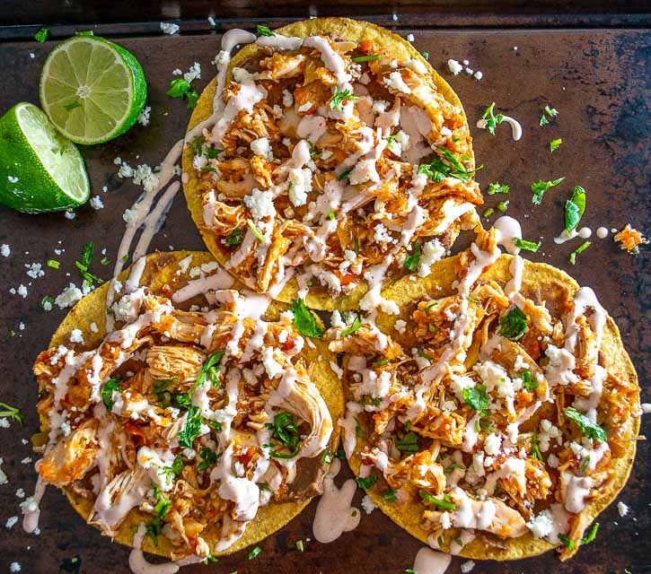

Tostadas de Tinga

Description
Chicken Tinga is a popular Mexican dish that has shredded chicken in a delicious homemade sauce made from tomatoes, onions, adobo sauce with chilis, and spices. It is traditionally served on tostadas, but it is very versatile and is delicious in a taco, on nacos, and in many other dishes! Once you make it the first time, you may want to double the recipe because it is so delicious!
Ingredients
- 3 Chicken breasts (~2 lbs)
- 1-1 1/2 White onion
- 2 Bay leaves
- 3 Medium size tomatoes
- 2-3 Cloves of garlic
- 1 7 oz Can chipotle peppers in adobo sauce (I like San Marcos brand)
- 1 Chicken bullion cube or packet
- Salt& Pepper
- Tostadas
- Toppings:
- Queso fresco
- Lettuce
- Avocado
- Sour cream
- Lime
- Crema Mexicana (1 Part sour cream, 1 part heavy cream. Whisk until smooth)
Steps
- Boil a pot of water with 2 bay leaves and 1/2 onion cut into large pieces
- Place chicken into boiling watern and let cook for about 30 minutes.
- While the chicken is cooking, cut the rest of the onion into small pieces, and shred the lettuce
- Once the chicken is done, set aside and place tomatoes in boiling water
- Shred chicken once it is cool enough
- Once the tomatoes look cooked (skin is starting to come off) remove from water and place in a blender
- Place garlic, bullion, chilis in adobo, 1/2 of the boiled onions, and 1/2 cup of water from the pot into the blender. Blend until smooth
- In a large pan, sweat the uncooked onions in some vegetable oil until translucent, or browned slightly
- Add sauce from blender and let simmer for about 5-7 mins, until reduced slightly. Add salt if necessary
- Add shredded chicken, mic and let cook for 2-3 mins
Serving instructions
This is the way we did it, which allegedy is an authentic, Mexican way of topping it, but I've seen some people and some reciepes that do it differently. Dont be afraid to get creative!
- Take a tostada and cover it with a nice layer of sour cream
- Put tinga on the bed of sour cream
- Top with lettuce, queso fresco, and avocado. Maybe some fresh onions and tomatoes too if you like.
- Drizzle the crema Mexicana on top and squeeze some lime juice on it
- Have napkins ready because it can sometimes get messy
- Enjoy!
All Recipes